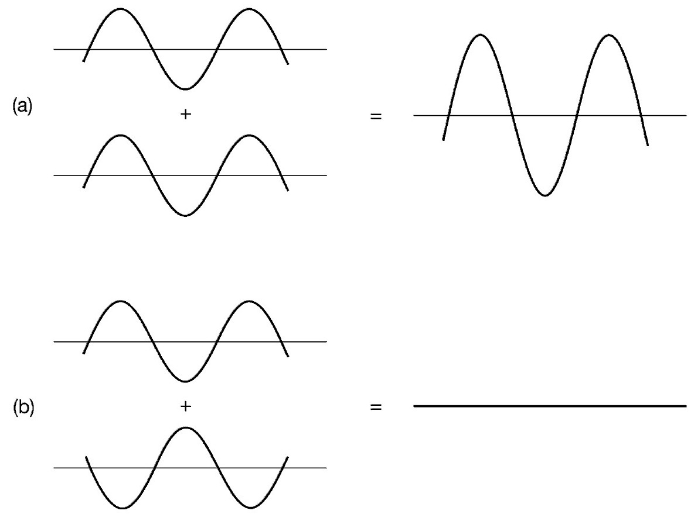

现代物理科学的首次繁荣在1687年达到顶峰，其标志是艾萨克·牛顿的《自然哲学之数学原理》的出版。此后，力学作为一门成熟科学得以建立，并且能够以清晰确定的方式描述粒子运动。这门新兴科学看起来是如此地无懈可击，以至于在18世纪末，最伟大的牛顿力学继承者皮埃尔·西蒙·拉普拉斯做出了那个著名的断言：如果拥有无限的计算能力，并且知道某一时刻所有粒子的位置，人类就可以利用牛顿方程预测整个宇宙的未来，并且可以同样确定地反推宇宙的过去。实际上，这个有些骇人听闻的机械论断言始终摆脱不了人们对其狂妄自负的强烈怀疑。首先，人类自身就不能像时钟一样按部就班地自动工作。其次，牛顿力学的成就虽然毫无疑问非常引人瞩目，但其并没有囊括当时已知物理世界的方方面面，仍然有一些未解决的问题在威胁着对牛顿力学体系自足性的信心。例如，牛顿发现的普适的引力平方反比定律（万有引力定律）的本质和起源是什么？这是一个牛顿自己也拒绝给出假设来回答的问题。另外，光的本质问题也没有解决。这方面，牛顿倒是在一定程度上给出了一个推测性的看法。在《光学》一书中，牛顿倾向于认为光是由一束小粒子流组成的。这种微粒说与牛顿从原子论方面看待物理世界的倾向是一致的。
现在看来，对光的本质的理解，直到19世纪，人们才取得真正的进步。19世纪伊始，即1801年，托马斯·杨给出了一个非常有说服力的证据，表明光具有波动性，这也证实了一个世纪以前与牛顿同时代的荷兰人克里斯蒂安·惠更斯的推测。杨氏实验的核心是我们今天称作干涉现象的效应，典型的例子就是光干涉实验中出现的明暗交替条纹。具有讽刺意味的是，牛顿本人已经发现了类似实验现象，今天我们称其为牛顿环。这类效应是波的特征，是按照如下方式发生的：两列波的叠加方式依赖于它们之间的相互振动。如果它们是同步的（物理学家的说法是相位同步），则波峰与波峰相互重叠，从而实现两列波间最大程度的相互加强。这种现象表现在光上就是明条纹。然而，当两列波完全不同步时（物理上指相位不同步），一列波的波峰与另一列波的波谷将会相互重叠，进而相互抵消。表现在光上，就会得到暗条纹。因此，明暗交替的干涉条纹的出现，毫无疑义地证实了波的存在。杨氏实验的结果似乎已经回答了光的本质问题，即光是一种波。
随着19世纪物理学的发展，人们对光的波动性的认识似乎变得更加清晰。汉斯·克里斯蒂安·奥斯特和迈克尔·法拉第的重要发现表明，电和磁这两种初看上去似乎特征迥异的现象，事实上彼此紧密相关。将电和磁以统一的方式进行描述的电磁理论最终由詹姆斯·克拉克·麦克斯韦完成。麦克斯韦是一位天才，说他可以与牛顿齐名并不为过。1873年，麦克斯韦在《论电和磁》一书中，给出了著名的电磁理论方程，该方程至今仍是电磁理论的基石，而《论电和磁》也是科学出版史上开创时代的经典巨著。麦克斯韦认识到这些电磁方程拥有波类型解，并且这些波的速度由已知的物理常数决定。而实际上，这些波的速度就是光速！

图1 两列波的叠加：（a）完全同步；（b）完全不同步
这个发现被视为19世纪物理学最伟大的胜利。光是电磁波的事实似乎被完全证实。麦克斯韦和同时代人认为这些波是弥漫于宇宙的弹性介质的振动，这种介质随后被称为以太。在一篇百科全书式文章中，他说以太是整个物理理论中证实最充分的物理对象。
我们把牛顿和麦克斯韦的物理学称为经典物理。到19世纪末，它已经成为一个壮观的理论大厦。当元老们，如开尔文勋爵，开始认为人们现在已经知道了所有物理学的重大思想，留待解决的只是以更高的准确性去处理细节时，简直一点也不令人吃惊。在19世纪八九十年代，德国的一个年轻人在思考他的学术事业时，被警告不要研究物理学。最好是到别的学科看看，因为物理学已经走到了路的尽头，没留下多少真正值得研究的东西了。这个年轻人的名字叫马克斯·普朗克，幸运的是他没有理会给他的建议。
事实上，在经典物理华丽的外表上已经开始显露出一些缺陷。在19世纪80年代，美国人迈克尔逊和莫雷已经做了一些聪明的实验，试图证明地球在以太中的运动。其思想如下：如果光确实是该介质中的波，那么测量到光速应该取决于观测者如何相对于以太移动。想象一下海上的波浪。从一艘船上观测到的它们的视觉速度，取决于这艘船是随着这些波浪运动还是逆着这些波浪运动，前者的速度要小于后者。设计这个实验的目的是比较光在两个相互垂直方向上的速度。只有当地球在进行测量时碰巧与以太相对静止，这两个速度才有望相同，而这种可能性可以通过在几个月后重复这个实验予以排除，那时地球在它的轨道中就向不同的方向运动了。实际上，迈克尔逊和莫雷探测不出任何速率上的差别。解决这个问题需要爱因斯坦的狭义相对论，该理论彻底摒弃了以太。这个伟大的发现并不是我们现在的关注点，不过应该注意到，相对论虽然意义重大且令人惊讶，却并没有放弃经典物理所具有的清晰性和确定性。这就是为什么我在前言中说狭义相对论所要求的革命性思想比量子理论所要求的要少得多。
量子革命的第一个线索实际上出现于1885年，虽然当时并没有被认识到。这个线索源自一名瑞士教师巴耳末的数学涂鸦。
他当时正在思考氢光谱，也就是从白炽气体发射出来的光经过棱镜后分裂成的一组分离的彩色条纹。不同颜色对应于所涉及光波的不同频率（振荡速率）。通过摆弄数字，巴耳末发现这些频率能够用一个非常简单的数学公式来描述（见数学附录1）。在那个时代，该发现似乎仅仅是一种好奇。
随后，人们试图用他们当时对原子的认识去理解巴耳末得出的结果。1897年，汤姆孙发现原子中的负电荷由微小粒子携带，这些微小粒子最后被命名为“电子”。用以平衡的正电荷被假定为只是简单地分布在整个原子中。这个观点被称为“梅子布丁模型”，电子相当于梅子，正电荷相当于布丁。光谱频率从而对应于电子在正电荷“布丁”中的各种振荡方式。然而，以在经验上令人满意的方式使这个观点实际起作用是极其困难的。我们将会看到，对巴耳末的古怪发现的正确解释，最终使用了一套非常不同的观点。同时，原子的本质可能太令人费解，因而这些问题没有引起大范围的关注。
更加明显具有挑战性和迷惑性的是另一个被称为“紫外灾难”的难题，这个难题最先由瑞利勋爵于1900年发现。紫外灾难源自19世纪另一个伟大发现——统计物理的应用。这里，科学家们试图理解和掌握复杂系统的行为，复杂系统中具体的运动状态可以呈现很多不同的形式。这种系统的一个例子就是由许多不同分子组成的一种气体，其中每个分子处于各自的运动状态。另一个例子就是辐射能，它可能由许多不同频率的能量组成。追踪如此复杂的系统中正在发生的所有细节是不可能的，但是，它们整体行为的一些重要方面仍可以被计算出来。事实就是这样，因为整体行为是对许多个体成分运动状态的一个粗粒化平均的结果。在这些可能性当中，最有可能的那一个起支配作用，因为它表现出压倒一切的最大可能。基于最概然估计，克拉克·麦克斯韦和路德维希·玻尔兹曼得以证明，人们能够可靠地计算一个复杂系统整体行为的特定整体性质，例如，已知气体的体积和温度来计算气体的压强。
瑞利将统计物理的这些技术应用到黑体辐射问题上，研究能量是如何分布在不同频率之间的。所谓的黑体就是能够对入射到身上的辐射全部吸收，并能将它们全部再发射出去的物体。黑体的平衡态辐射光谱问题似乎是一个相当另类的问题，但实际上，在非常好的近似下黑体是可实现的。因此，这是一个从理论上和实验上都可以研究的问题，例如研究一个特制烤箱内部的辐射。这个问题可以通过以下已知事实来简化：该问题的答案仅取决于黑体的温度，而不取决于黑体结构的任何其他细节。瑞利指出，直接应用屡试不爽的统计物理思想将导致灾难性的结果。计算结果不仅与测量的光谱不一致，而且根本没有任何意义。计算结果预言，集中在高频处的能量将会无限大。这个令人尴尬的结论被称为“紫外灾难”。它的灾难性足够清晰：“紫外”是“高频”的另一种说法。灾难的出现是因为经典统计物理学预见到，系统的每个自由度（这里指辐射能够波动的每种特定方式）都将接受相同的固定能量，该能量大小仅取决于温度。频率越高，对应的振荡模式的数量就越多，结果就是高频区的任何东西都不受控制，进而堆积出无限能量。这个问题不只是经典物理学光鲜外表上的一个难看的瑕疵，更确切地说，它是大厦裂开的一个巨大漏洞。
一年内，已在柏林担任物理教授的马克斯·普朗克发现了一个非比寻常的方法来摆脱这个困境。他告诉儿子，他相信自己做出了一个与牛顿力学同样意义重大的发现。这看起来是在夸口，但是普朗克只是说出了朴素的事实。
经典物理认为，辐射是连续地渗入和渗出黑体的，就像水渗入和渗出海绵一样。在经典物理平滑变化的世界里，其他的猜测看起来都是完全没有道理的。然而，普朗克提出了一个相反的看法，认为辐射是在确定大小的能量包里不时地进行发射和吸收的。他指明这些量子 （对能量包的称呼）之一包含的能量应与辐射的频率成正比。比例系数被认为是自然界的一个普适常数，现在被称为普朗克常数，并用符号h来表示。与日常经验中的尺寸相比，h的量级非常小。这就是辐射的这一间断行为以前没有被注意到的原因：一行小点非常紧密地靠在一起，看起来就像实线一样。
这个大胆假说的一个直接结果就是，仅在单量子能量明显很高的事件中能够发射或吸收高频辐射。与经典物理的期望相比，这个大能量的代价意味着高频事件被严重抑制。以这种方式化解高频困难，不仅消除了紫外灾难，同时还产生了一个与经验结果非常一致的公式。
显然，普朗克意识到的事情意义重大。但是究竟这个重大意义是什么，刚开始无论是他还是其他人都无法确定。人们应该对量子重视到什么程度？它们是辐射的永久特征，还是仅仅是辐射碰巧与黑体相互作用的方式的一个方面？毕竟，从水龙头上滴下的水形成了一串水量子，但是只要落到盆中，它们就与其他的水混合而失去了自己的特性。
下一个进展是由一位时间充裕的年轻人完成的。当时这位年轻人是伯尔尼专利局的一名三级检查员。他的名字就是阿尔伯特·爱因斯坦。在爱因斯坦的奇迹之年——1905年，他做出了三项奠基性发现，其中之一被证明是量子理论展开中的故事的下一步。爱因斯坦通过研究光电效应来思考那些已经显现但令人费解的光性质（数学附录2）。光电效应是指一束光将电子从金属内部弹射出来的现象。金属包含电子，电子可以在金属内部四处移动（电流就是由电子流动产生的），但是电子并没有足够的能量使它们完全逃离金属。光电效应的发生一点也不令人吃惊。辐射将能量转移到被限制在金属内部的电子上，如果电子获得的能量足够多，就能够摆脱限制它们的力。按经典物理的方式来思考，电子将会被光波的“汹涌”所搅动，一些电子被搅动得足够厉害从而能够从金属中振动松脱出来。根据这个看法，由于光束的强度决定了它所包含的能量，金属中电子被光波搅动出来的程度将依赖于光束的强度，而不会预见到对入射光的频率有任何特别的依赖。事实上，实验显示出的是完全相反的情况。当低于一个特定的临界频率时，不管光束有多强，都没有电子被发射出来；相反，当高于那个临界频率时，即使非常弱的光束都能够发射出一些电子。
爱因斯坦看到，如果认为光束是一串持续量子流，这个令人费解的情况将立刻变得明白易懂。一个电子被发射出来是因为这些量子中的一个与其碰撞并且失去了全部能量。根据普朗克量子假说，那个量子中的能量值与频率成正比。如果频率太低，在一次碰撞中将没有足够的能量被转移以使电子能够逃离。另一方面，如果频率超过了某个临界值，将会有足够的能量使电子得以逃离。光束的强度仅仅决定其包含多少量子，因此也决定有多少电子被卷入碰撞并射出。增加光束强度不能改变在单次碰撞中被转移能量的多少。认真对待光量子（它们后来被称为“光子”）的存在，就可以揭开光电效应的神秘面纱。年轻的爱因斯坦完成了一个重大的发现。事实上，他最终因为这个发现而被授予诺贝尔奖，瑞典皇家科学院大概认为给他在1905年的另外两个伟大发现——狭义相对论和对分子真实性的令人信服的证明——颁发诺贝尔奖还是有疑问的！
光电效应的量子分析是一项伟大的物理学胜利，但是这项胜利似乎也付出了惨重代价。现在，该课题面临一个严峻的危机。如何调解19世纪那些关于光的波动性的伟大认识与这些新思想的冲突？毕竟，波是一种分散的、摆动的事物，而量子是粒子性的，像小子弹一样。两者怎么可能同时是正确的？相当长的一段时间，物理学家只得接受光的波粒二象性这种令人不快的悖论。试图否认杨和麦克斯韦或者普朗克和爱因斯坦任何一方的观点，都不会取得任何进展。人们只得勉强依靠经验，即使并不理解。许多人似乎已经开始这么做，他们采取了转移注意力这样相当怯懦的策略。但最终，我们会发现这个故事有一个圆满的结局。
同时，物理学家的注意力从光转向了原子。1911年，欧内斯特·卢瑟福在曼彻斯特与一帮年轻的合作者一起，开始研究一些带正电的被称作α粒子的小抛射物冲击金薄膜时的表现。大多数α粒子受影响很小，直接通过，但令研究者非常吃惊的是，有一些α粒子的偏转非常大。后来卢瑟福说，这就像一个15英寸的炮弹打到一张薄纸片上却反弹回来一样令人惊讶。对于这个结果，原子的梅子布丁模型根本没有任何意义。α粒子本应该像子弹穿过蛋糕一样顺利穿过。卢瑟福很快认识到只有一个方法能摆脱这个困境。排斥带正电α粒子的金原子正电荷，不能像在布丁里一样分散开来，而必须全部集中在原子的中心。与这个集中正电荷的近距离相遇将有足够的能力来偏转α粒子。卢瑟福是一位出色的实验物理学家，但并不是一位伟大的数学家。因此，他能从在新西兰的大学时代就学习的古老力学教科书中跳出来，进而证明原子中心的正电荷被负电子所围绕——这个想法与他观测到的α粒子行为完美符合。梅子布丁模型立即让位给原子的“太阳系”模型。卢瑟福和他的同事发现了原子核。
这是一次伟大的成功，但是乍一看，似乎又是一个付出惨重代价的胜利。事实上，原子核的发现又让经典物理跌进最深的危机中。如果原子中的电子环绕着原子核转动，那么电子将不停地改变它们的运动方向。在此过程中，经典电磁理论要求它们应该辐射出一部分能量。因此，它们应该稳定地向原子核移近。这是一个真正的灾难性结论，因为这意味着原子不稳定，其组成部分电子会盘旋塌缩到中心。此外，在此衰减过程中，将会发射连续的辐射模式，看上去一点也不像巴耳末公式给出的分立的谱频率。1911年以后，经典物理学的宏伟大厦，不只是开始破裂，而且似乎受到了一场地震的袭击。
然而，如同普朗克处理紫外灾难的情况一样，也有一位理论物理学家来拯救这个危机。他提出一个大胆而激进的新假说，从失败的虎口夺得成功。这次是一位年轻的丹麦人，名叫尼尔斯·玻尔，在卢瑟福的曼彻斯特实验室工作。1913年，玻尔给出了一个革命性的提议（数学附录3）。普朗克已经将能量渗入和渗出黑体的平滑过程这一经典理念，替换为能量以量子方式发射和吸收的断断续续的离散过程理念。从数学的意义上来讲，这就意味着一个物理量——比如能量改变——以前认为可以取任何数值，现在却认为仅能取一系列分立的值（包含1，2，3，……个量子）。数学家会说连续已经被离散取代了。玻尔看出，这可能是正在缓慢诞生的新物理学的总体趋势。他将普朗克应用在电磁辐射上的类似原理应用在了原子上。经典物理学家本来料想环绕原子核运动的电子轨道半径可以取任意值。玻尔提出用离散轨道要求来代替连续轨道要求，即轨道半径只能取一系列确切的值，并且可以进行枚举（即第一个轨道，第二个轨道，第三个轨道，……）。他还明确提出如何利用包含普朗克常数h的公式来确定这些可能的半径。（他的提议涉及角动量，这是一个测量电子旋转运动的物理量，和h有相同的物理单位。）
这些提议得到两个结果。一是重建了原子稳定性，这一点令人非常满意。一旦电子处于最小允许半径对应的状态（也就是能量最低的状态），电子将没有能量更低的地方可去，因此也就没有能量可以损失。当电子从大半径状态失去能量时，将不得不到达这个最低的能量状态。玻尔假设当这种过程发生时，多余的能量将会以一个光子的形式辐射出去。逻辑推论显示，上述想法直接导致了玻尔大胆猜想的第二个结果，即巴耳末公式对谱线的预测。差不多30年后，这个神秘的数值预测从一件无法理解的怪事变成了新原子理论的一个清楚明白的性质。谱线的锐利性可以看成是离散的反映，而离散也开始被认为是量子思维的一个典型特征。基于经典物理所期望的连续螺旋运动被极其不连续的量子跃迁所取代，即电子从一个半径允许的轨道跃迁到一个更小半径允许的轨道。
玻尔原子理论是一项伟大的成就。但是，从许多方面来说，它仍然只是对经典物理的创造性修补。事实上，玻尔的先驱性工作本质上就是修补，是给破碎的经典物理大厦打补丁。更进一步拓展这些概念的尝试很快就碰到困难，遭遇矛盾。这些努力后来被称为“旧量子理论”，是牛顿和麦克斯韦的经典思想与普朗克和爱因斯坦的量子观点的不自然、不协调的结合。玻尔的工作是展开量子物理历史至关重要的一步，但它仅仅是通往“新量子理论”道路上的一个补给站，新量子理论对这些奇怪的想法进行了完全整合和协调一致的解释。在新量子理论实现之前，另一个重要现象有待发现，它进一步强调了寻找方法来面对量子思维势在必行。
1923年，美国物理学家阿瑟·康普顿研究了物质对X射线（高频电磁辐射）的散射。他发现被散射的辐射改变了频率。按照波动图像，这是不可理解的。波动图像暗示散射过程是由于原子中的电子从入射波中吸收和再发射能量，并且在此过程中频率是不会变化的。然而，按照光子图像，这个结果却很容易理解。在电子和光子之间发生了类似“台球”的碰撞，在此过程中，光子失去了一些能量给电子。根据普朗克的方法，能量的变化与频率的变化是相同的。因此，康普顿可以对他的观测给出定量的解释，进而为电磁辐射的粒子性特征提供了迄今为止最有说服力的证据。
本章中讨论的一系列发现所引起的困惑将很快被解决，不会持续太久。在康普顿的工作完成后不到两年，物理学家取得了显著的、持久的理论进展。新量子理论的曙光开始显现。